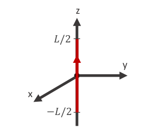

- Hallaremos el campo magnético generado en todo el espacio por una corriente continua lineal, recta y de longitud finita \(L\) (porción de un circuito más complejo).

\begin{align} \vec B(\vec r) = \frac{\mu_0}{4 \pi} \int {i d\vec l \times (\vec r - \vec r') \over |\vec r - \vec r'|^3} \end{align}Observación: Hay simetría de rotación en \(\varphi\) (me muevo en \(\varphi\) y veo lo mismo).
Por lo tanto, el campo solo dependerá de \(\rho\) y de \(z\) :
\begin{align} \vec{B}(\vec{r})=\vec{B}(\rho, \not \varphi, z)=\vec{B}(\rho, z) \end{align}- Queremos calcular el campo en todo el espacio:
Punto campo \(\quad \vec{r}=x \hat{\imath}+y \hat{\jmath}+z \hat{k}\)
O bien: \(\quad \vec{r}=\rho \cos \varphi \hat{\imath}+\rho \operatorname{sen} \varphi \hat{\jmath}+z \hat{k}\)
O bien: \(\quad \vec{r}=\rho \hat{\rho}+z \hat{k}\)
Punto fuente \(\quad \vec{r}^{\prime}=z^{\prime} \hat{k}\)
-
Luego calculamos: \((\vec r - \vec r') = x \hat i + y \hat j + (z - z') \hat k\)
- o bien en cilindricas.
-
Corriente lineal: \(i d \vec l'\)
- Parametrizamos \(d \vec{l}^{\prime} = dz' \hat k\) y definimos los límites de integración \( - \frac L2 \leq z' \leq \frac L2\)
\(d \vec{l}^{\prime} \times\left(\vec{r}-\vec{r}^{\prime}\right)=d z^{\prime} \hat{k} \times\left[\rho \cos \varphi \hat{\imath}+\rho \operatorname{sen} \varphi \hat{\jmath}+\left(z-z^{\prime}\right) \hat{k}\right]\)
\(d \vec{l}^{\prime} \times\left(\vec{r}-\vec{r}^{\prime}\right)=\left|\begin{array}{ccc}\hat{\imath} & \hat{\jmath} & \hat{k} \\ 0 & 0 & d z^{\prime} \\ \rho \cos \varphi & \rho \operatorname{sen} \varphi & \left(z-z^{\prime}\right)\end{array}\right|\)
\(d \vec{l}^{\prime} \times\left(\vec{r}-\vec{r}^{\prime}\right)=-\rho \operatorname{sen} \varphi d z^{\prime} \hat{\imath}+\rho \cos \varphi d z^{\prime} \hat{\jmath}+0 \hat{k}\)
\(d \vec{l}^{\prime} \times\left(\vec{r}-\vec{r}^{\prime}\right)=\rho d z^{\prime}(-\operatorname{sen} \varphi \hat{\imath}+\cos \varphi \hat{\jmath})\)
\(d \vec{l}^{\prime} \times\left(\vec{r}-\vec{r}^{\prime}\right)=\rho d z^{\prime} \hat{\varphi}\)
\(d \vec{l}^{\prime} \times\left(\vec{r}-\vec{r}^{\prime}\right)=d z^{\prime} \hat{k} \times\left[\rho \hat{\rho}+\left(z-z^{\prime}\right) \hat{k}\right]\)
\(d \vec{l}^{\prime} \times\left(\vec{r}-\vec{r}^{\prime}\right)=\left|\begin{array}{ccc}\hat{\rho} & \hat{\varphi} & \hat{k} \\ 0 & 0 & d z^{\prime} \\ \rho & 0 & \left(z-z^{\prime}\right)\end{array}\right|\)
\(d \vec{l}^{\prime} \times\left(\vec{r}-\vec{r}^{\prime}\right)=0 \hat{\rho}+\rho d z^{\prime} \hat{\rho}+0 \hat{k} \quad\)
\(d \vec{l}^{\prime} \times\left(\vec{r}-\vec{r}^{\prime}\right)=\rho d z^{\prime} \hat{\varphi}\)
\begin{align} \vec{B}(\vec{r})=\frac{\mu_{0}}{4 \pi} \int \frac{i d \vec{l}^{\prime} \times\left(\vec{r}-\vec{r}^{\prime}\right)}{\left|\vec{r}-\vec{r}^{\prime}\right|^{3}}=\frac{\mu_{0} i}{4 \pi} \int_{-L / 2}^{L / 2} \frac{\rho d z^{\prime} \hat{\varphi}}{\left(\rho^{2}+\left(z-z^{\prime}\right)^{2}\right)^{3 / 2}} \end{align}- Tenemos una integral por cada componente:
Por sustitución y por tabla de integrales:
\begin{align} & u=z-z^{\prime} \\ & \int \frac{d u}{\left(\rho^{2}+u^{2}\right)^{3 / 2}}=\frac{u}{\rho^{2} \sqrt{\rho^{2}+u^{2}}}+C \\ & d u=-d z^{\prime} \quad \Rightarrow \quad d z^{\prime}=-d u \\ & B_{\varphi}(\rho, z)=\Theta \frac{\mu_{0} i \rho}{4 \pi} \int_{\left(z+\frac{L}{2}\right)}^{\left.z-\frac{L}{2}\right)} \frac{d u}{\left(\rho^{2}+u^{2}\right)^{\frac{3}{2}}}=-\frac{\mu_{0} i \rho}{4 \pi}\left(\frac{(z-L / 2)}{\rho^{2} \sqrt{\rho^{2}+(z-L / 2)^{2}}}-\frac{(z+L / 2)}{\rho^{2} \sqrt{\rho^{2}+(z+L / 2)^{2}}}\right) \\ \end{align}Resultado:
\begin{align} \vec{B}(\rho, z)=\frac{\mu_{0} i}{4 \pi \rho}\left(\frac{(L / 2-z)}{\sqrt{\rho^{2}+(z-L / 2)^{2}}}+\frac{(L / 2+z)}{\sqrt{\rho^{2}+(z+L / 2)^{2}}}\right) \hat{\varphi} \end{align}- Hacemos tender \(L\) a infinito (o bien, nos alejamos de los bordes: \(|z|<<L\) ):